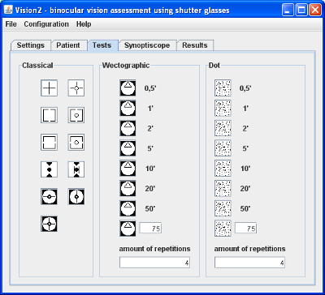

Tab "Test" (picture 1) is divided into 3 parts for 3 types of tests: classical, vectographical and random dot. Launching specific test ensue after clicking one of icons symbolized tests. Test control is described in section Test control
Launching classical test cause single-time test execution. Vectographical and random dot test are executed 4 times default. You can change this setting in "amount of repetitions" field.
Vectografical and random dot test measure angle of stereoscopy. To make it easer there are 7 predefined values: 0,5° 1° 2° 5° 10° 20° and 50°. Button situated lowest in both groups serves to launch examination with freely chosen angle of stereoscopy value (default 75° but one can write down any value).
